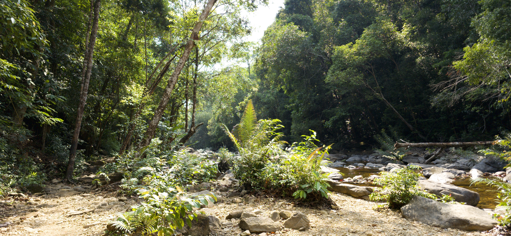

sips -s format jpeg 20250430_151333.dng --out 20250430_151333.jpgThe photo behind each element is physically bent via Snell's law in the WebGL2 shader. html2canvas captures the live DOM as a texture — then the fragment shader displaces UVs per pixel using the surface normal.
Hover slowly — the photo underneath bends as your cursor moves. Displacement is computed per-pixel using the bump-map normal and IOR 1.45.